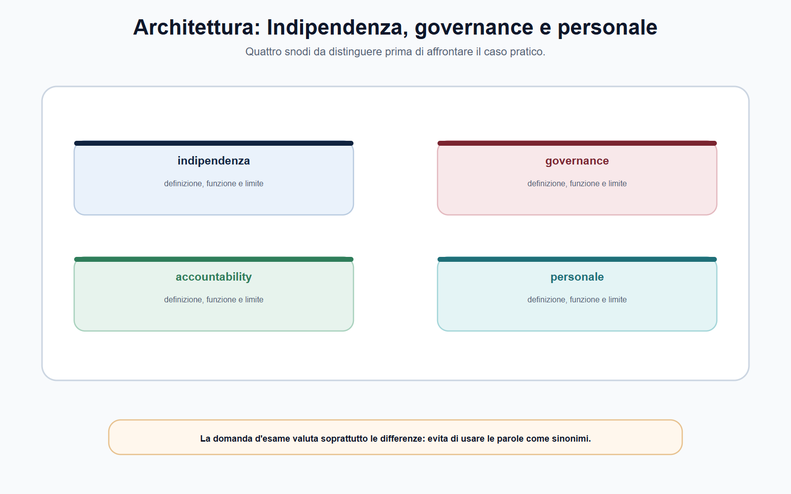
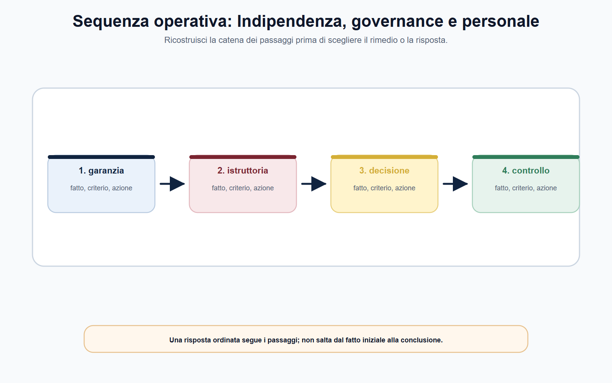
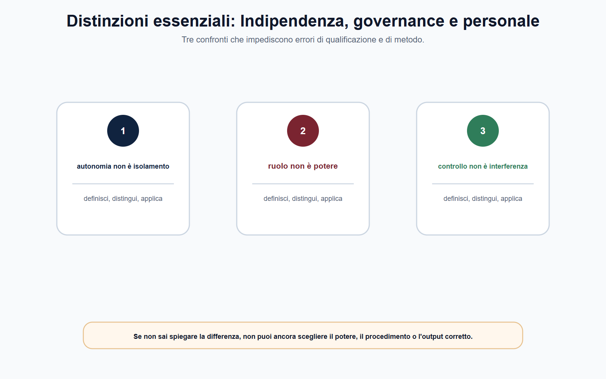
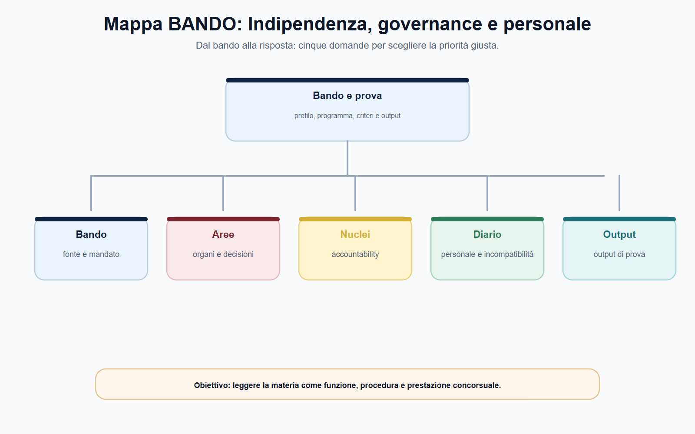

VOL-05 · Capitolo 02
M-FC05
Indipendenza, governance,
accountability e personale
L’aggettivo «indipendente» non significa che l’ente sia libero da regole, che possa agire senza motivare o che i suoi funzionari siano sottratti alle responsabilità dell’amministrazione pubblica. Significa che l’esercizio di determinate funzioni è protetto da interferenze indebite e collocato in un disegno di garanzie stabilito dalla legge.
01 · Il problema in prova
Due errori speculari
Il primo errore descrive l’autorità come un’amministrazione ordinaria, ignorando le garanzie che proteggono il giudizio tecnico e regolatorio. Il secondo la rappresenta come un soggetto privo di vincoli istituzionali. La lettura corretta tiene insieme autonomia e legalità.
Che cos’è l’indipendenza
È una garanzia dell’azione amministrativa, non un privilegio dell’ente. Protegge destinatari, utenti e corretto funzionamento del mercato o del servizio. Non equivale ad assenza di controlli.
A che serve in prova
A ricostruire ente, organi, poteri, responsabilità e fonte del personale senza presumere un modello uniforme. Per ogni autorità la sequenza è: fonte istitutiva, organi e poteri, regolamenti interni, trasparenza e controlli, bando e profilo.
Trasformare l’analogia tra enti in regola. L’analogia viene dopo la fonte, non prima. Organi, uffici, reclutamento e finanziamento vanno verificati nel singolo ordinamento settoriale.
In che modo un’autorità può decidere con autonomia e, nello stesso tempo, restare pienamente responsabile?
L’indipendenza non riduce l’accountability: la rende più necessaria. Chi dispone di garanzie di autonomia deve dimostrare che le decisioni sono state adottate entro la competenza, con istruttoria adeguata, motivazione coerente e garanzie procedimentali.
02 · Tre piani
Giudizio, funzione, organizzazione
In una risposta d’esame la nozione va scomposta. La disciplina concreta varia secondo l’ente e la legge istitutiva. Non è una qualità psicologica del singolo componente: è una garanzia costruita con regole.
| Piano | Che cosa protegge | Come si costruisce |
|---|---|---|
| Indipendenza di giudizio | Le decisioni si assumono su competenze, elementi istruttori, regole procedimentali e motivazione, non su pressioni dei soggetti regolati. | Nomine, mandato, incompatibilità, astensione, funzionamento degli organi. |
| Indipendenza funzionale | L’autorità svolge regolazione, vigilanza, accertamento, tutela o sanzione senza che l’esercizio sia diretto dall’interesse del vigilato. | Autonomia sempre finalizzata alla funzione: non consente di oltrepassare la competenza. |
| Indipendenza organizzativa | Regole e strutture interne proprie, nei limiti della fonte istitutiva e degli atti applicabili. | Non comporta uniformità fra gli enti: si indica la fonte da controllare. |
Le leggi istitutive di AGCM, ARERA e AGCOM mostrano configurazioni differenti. Il punto non è memorizzare il numero di componenti: è ricostruire la funzione della garanzia e verificarne la configurazione vigente.
03 · Quattro snodi
Non sono sinonimi
Indipendenza, governance, accountability e personale vanno distinti per funzione, presupposti, soggetti ed effetti. Dopo la distinzione se ne spiega il coordinamento. La domanda d’esame valuta soprattutto le differenze.

Quattro snodi da tenere distinti prima del caso: definizione, funzione e limite di ciascuno.
04 · Governance
Chi decide e chi istruisce
Governance è l’insieme delle regole che distribuiscono funzioni, responsabilità e flussi decisionali. Non coincide con il solo organigramma. Comprende organi, nomine, durata, incompatibilità, attribuzioni decisorie, ruolo delle strutture e rapporto tra indirizzo, istruttoria, gestione e controllo.
Legge istitutiva
Natura dell’ente, organi essenziali, garanzie principali. Prima fonte, non la pagina web e non il solo bando.
Regolamenti
Organizzazione, funzionamento, deleghe, procedimenti. Qui si trova il percorso decisionale concreto.
Organo di vertice
Indirizzo, decisione, atti generali o provvedimenti, controllo sull’azione. Spesso collegiale, non identico in tutte le autorità.
Strutture
Analisi, istruttoria, supporto tecnico, gestione documentale, attuazione. Responsabilità proprie, non solo «esecuzione».
Il regolamento ARERA distingue attribuzioni strategiche e di controllo da quelle di gestione amministrativa. Non si copia il modello su altri enti: si impara a individuare organo competente, ufficio istruttore, responsabile del procedimento e atto che fissa il percorso.
05 · Sequenza
Dai fatti alla competenza
Nomine, durata e incompatibilità si leggono in chiave funzionale: preservano imparzialità e credibilità. Non diventano un elenco indifferenziato di divieti. In concorso si dichiara la regola generale e si rinvia alla fonte dell’ente per il dettaglio.

Una risposta ordinata segue i passaggi; non salta dal fatto iniziale alla conclusione su «chi decide».
06 · Accountability
Autonomia controllabile
L’accountability è la capacità dell’autorità di rendere comprensibile, verificabile e contestabile l’esercizio delle funzioni. Non si esaurisce in un documento annuale né coincide con la sola pubblicazione di dati. È un sistema, la cui intensità dipende dalla disciplina applicabile.
| Elemento | Che cosa rende visibile |
|---|---|
| Tracciabilità e competenze | Chi ha istruito, chi ha proposto, chi ha deciso. |
| Motivazione | Le ragioni della decisione, distinguendo fatti, dati, valutazioni e proposta. |
| Pubblicità e trasparenza | Obblighi previsti per l’ente, non gli stessi per ogni procedimento. |
| Relazioni e rendicontazione | Forme istituzionali stabilite dalla legge. |
| Controlli | Amministrativi, contabili o istituzionali previsti, non un potere politico di sostituzione. |
| Tutela giurisdizionale | Rimedi nei casi e nei modi disciplinati dall’ordinamento. |
«L’autorità risponde solo a se stessa» è falso: agisce nel quadro della legge. «Ogni atto segue lo stesso procedimento e lo stesso controllo» è altrettanto improprio: la disciplina cambia in base al potere esercitato e all’ente competente.
07 · Distinzioni
Prima di rispondere, confronta
Governance e accountability non sono equivalenti. La prima distribuisce chi decide e chi istruisce; la seconda rende l’autonomia verificabile. Se non sai spiegare la differenza, non puoi ancora scegliere il procedimento o l’output corretto.

Tre confronti da controllare prima di rispondere: indipendenza non è assenza di vincoli; governance non è accountability; personale non è un regime unico.
08 · Personale
Non esiste una scorciatoia unica
«Personale delle autorità» non indica un regime omogeneo. Le autorità differiscono per fonte istitutiva, funzioni, organizzazione, reclutamento, regolamenti interni e disciplina del rapporto. Non si presume un unico contratto collettivo né l’applicazione automatica della disciplina di un’altra amministrazione.
| Elemento | Domanda operativa | Fonte prioritaria |
|---|---|---|
| Base del rapporto | Quale autonomia o quale rinvio disciplina il personale dell’ente? | Legge istitutiva e norme speciali. |
| Organizzazione | Quali uffici, ruoli, responsabilità e procedure interne? | Regolamento di organizzazione e del personale. |
| Trattamento | Quale disciplina contrattuale o regolamentare governa il rapporto? | Contratto, accordo o regolamento vigente dell’ente. |
| Selezione | Quali requisiti, prove e profilo professionale? | Bando, allegati e atti richiamati. |
Le fonti ARAN restano importanti per il lavoro pubblico contrattualizzato e quando la disciplina dell’ente vi rinvia o il bando lo richiede. Non sono una chiave universale: prima si individua il regime applicabile, poi si consulta la fonte corrispondente.
09 · BANDO
Collegare la voce al documento giusto
Quando il bando richiama ordinamento, organizzazione, contabilità, trasparenza, personale o codice di comportamento, non basta una definizione generale. Occorre il documento che rende quella voce verificabile.
| Voce | Errore da evitare |
|---|---|
| Indipendenza e organi | Confondere autonomia con assenza di controlli. |
| Organizzazione | Usare un organigramma non aggiornato come fonte normativa. |
| Trasparenza | Applicare indistintamente gli stessi obblighi a ogni procedimento. |
| Personale | Presumere un CCNL unico o un rinvio automatico ad ARAN. |
Il bando integra, ma non sostituisce, legge e regolamenti. Prima la fonte, poi il profilo.

10 · Caso guidato
La richiesta informale del soggetto regolato
Un funzionario predispone un’analisi istruttoria. Un rappresentante di un’impresa interessata, conosciuto in un precedente contesto, chiede informalmente una bozza «per segnalare subito eventuali inesattezze» e propone un incontro non verbalizzato.
| Passaggio | Ragionamento |
|---|---|
| Non è cortesia | Verificare se esiste un canale procedimentale per interlocuzioni, osservazioni o accesso e in quale fase si è. |
| Senza base formale | Non si trasmettono documenti né si anticipano valutazioni. Si riferisce al responsabile, si conserva traccia, si usano i canali istituzionali. |
| Dubbio di imparzialità | Il funzionario non decide da solo la propria posizione: segnala la circostanza secondo la disciplina applicabile, perché si valutino astensione, riassegnazione o altri rimedi. |
| I quattro concetti | L’indipendenza chiede che l’istruttoria non sia condizionata; la governance identifica chi gestisce il fascicolo; l’accountability impone tracciabilità; il personale dà le regole su comportamento, riservatezza e conflitti. |
11 · Lavoro quotidiano
Accountability nel fascicolo
Per il funzionario accountability significa anche qualità del lavoro. Queste attenzioni non sono meri adempimenti: proteggono l’ente, il decisore e il destinatario dell’atto.
Nota istruttoria
Distingue fatti, dati, fonti, valutazioni e proposta. Confondere i piani genera opacità e rende fragile la motivazione.
Fascicolo
Consente di ricostruire le attività svolte senza affidarsi alla memoria dei singoli. Chi istruisce, decide o riesamina deve poter seguire il percorso.
Comunicazione
Rispetta competenza, riservatezza e canali formali. L’interlocuzione legittima si riconduce a regole uguali per tutti i destinatari.
Quiz, orale e caso usano lo stesso contenuto con forme diverse. Nel quiz cerca la distinzione fra governance e accountability; all’orale enuncia criterio, limite ed esempio; nel caso individua fatti, fonte, competenza e passo istruttorio.
12 · Verifica
Due domande da saper spiegare
Qual è il rapporto tra indipendenza e accountability?
L’indipendenza è una garanzia funzionale che protegge l’esercizio delle competenze attribuite, attraverso regole su organi, nomine, incompatibilità, organizzazione e procedure. Proprio perché l’autorità è autonoma, l’azione deve essere motivata, trasparente e verificabile secondo le forme di accountability e tutela previste.
Il Governo può annullarne nel merito un provvedimento con una direttiva politica?
No. L’indipendenza protegge l’esercizio delle competenze da interferenze di merito estranee alla disciplina applicabile. Ciò non elimina controlli, rimedi e responsabilità previsti: vanno individuati nella fonte pertinente, non confusi con un potere generale di sostituzione politica.
13 · Mini-esercizio
Matrice sull’ente del tuo bando
Completa ogni riga con un riferimento puntuale alla fonte vigente e annota la data di verifica. L’esercizio è corretto solo quando ogni informazione deriva dalla propria fonte.
| Campo | Dato da ricostruire |
|---|---|
| Fonte istitutiva | Denominazione, articolo o disposizione rilevante. |
| Organo o organi | Composizione e attribuzioni da verificare, senza copiare un altro ente. |
| Regolamento organizzativo | Titolo, data e sede di pubblicazione. |
| Accountability | Relazione, pubblicità, controllo o tutela applicabili. |
| Personale | Regolamento, accordo o bando da cui ricavare la disciplina. |
«Le autorità indipendenti non dipendono da nessuno e il loro personale segue il normale contratto delle pubbliche amministrazioni.» L’indipendenza è delimitata da legge, competenza, procedimento e controlli. Il regime del personale si accerta ente per ente.
14 · Controllo incrociato
Tre prospettive sulla stessa scheda
Se una prospettiva non trova risposta, riapri l’analisi nel punto preciso invece di aggiungere una conclusione generica. Completa con una riga sulle alternative: quale fatto cambierebbe la qualificazione, quale fonte muterebbe il perimetro del personale, quale conseguenza sui controlli.
Candidato
Hai definito l’indipendenza senza dilungarti su nozioni estranee? Hai tenuto ferma la differenza rispetto a ministero ed ente pubblico?
Istruttore
La distinzione fra governance e accountability poggia su documenti, non su supposizioni? Conflitti e incompatibilità sono collegati a fatti, competenza e sequenza?
Decisore
Il passaggio sui conflitti giustifica l’esito? Se manca un elemento, la risposta indica quale documento serve invece di colmare il vuoto con un automatismo.
15 · Errori
Opzioni quasi corrette
Regola vera, soggetto sbagliato
Un obbligo di trasparenza o un contratto collettivo può essere vero per un’amministrazione e non per l’autorità del bando. Trasferire la funzione di un istituto a un altro è l’opzione errata più frequente nei quiz.
Dato mobile
Un organigramma, un bando storico o una pagina operativa non valgono per ogni procedura successiva. Composizione degli organi, requisiti e disciplina del personale si ricontrollano nella fonte vigente.
La risposta finale deve contenere il proprio limite: se manca un elemento, si dichiara quale accertamento serve. Dichiarare il limite informativo è più professionale che colmarlo con un automatismo.
16 · Da tenere ferme
Cinque regole, con il perché
1. L’indipendenza è una garanzia funzionale, non assenza di controlli: opera entro competenze legali e protegge il giudizio da interferenze indebite.
2. La governance distribuisce decisione, istruttoria, gestione e controllo secondo le fonti dell’ente: il bando descrive una selezione, non sostituisce la legge istitutiva.
3. L’accountability rende l’autonomia verificabile: motivazione, tracciabilità, trasparenza, rendicontazione e tutele. Non «risponde solo a se stessa».
4. Il personale non segue necessariamente una disciplina uniforme: legge istitutiva, regolamento, contratto o accordo dell’ente, poi il bando.
5. L’analogia tra autorità viene dopo la fonte, non prima. Nomine, incompatibilità e astensione si dichiarano in generale e si verificano nell’ente del concorso.
Prossimo capitolo
Regolazione europea multilivello e reti delle autorità
L’autorità nazionale non decide in un vuoto. Il capitolo successivo apre fonti UE, organismi europei e reti di cooperazione, senza confondere chi coordina con chi sanziona.